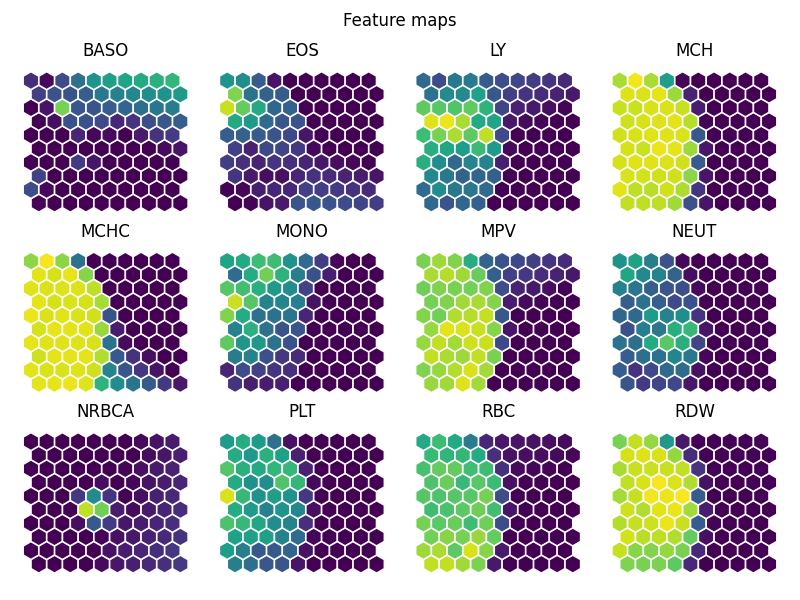
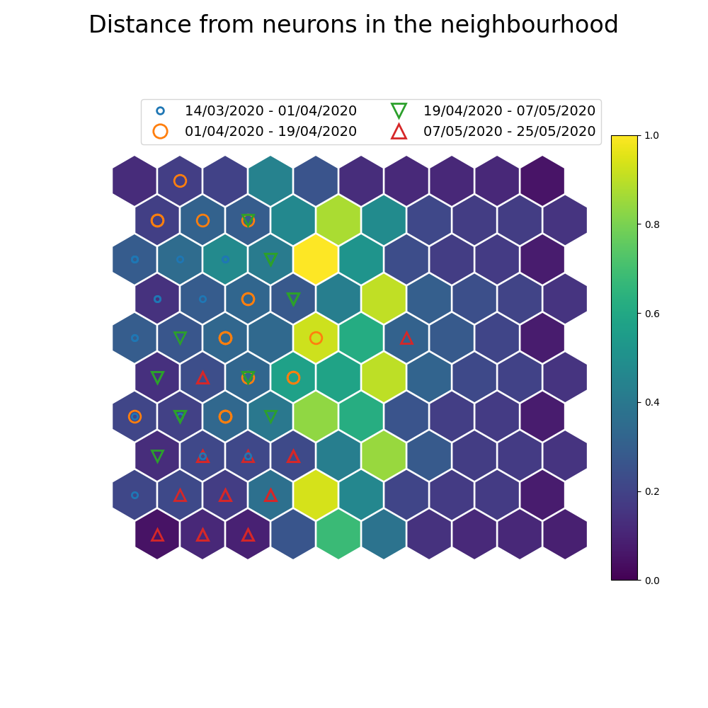

Note
Click here to download the full example code
SOM using time-series¶
SOM of lab-panels for a single patient over time.
- 
- 
Out:
quantization error: 0.12185576501620386
9 10 11 12 13 14 15 16 17 18 19 20 21 22 23 24 25 26 27 28 29 30 31 32 33 34 35 36 37 38 39 40 41 42 43 44 45 46 47 48 49 50 51 52 53 54 55 56 57 58 59 60 61 62 63 64 65 66 67 68 69 70 71 72 73 74 75 76 77 78 79 80 81 82 83 84 85 86 | import pandas as pd
from minisom import MiniSom
from sklearn import preprocessing
import datetime as dt
from pkgname.utils.som_utils import *
path = '../../data/daily-profile.csv'
SEED = 0
TIME_PERIODS = 4
GENERAL_COLS = ["_uid", "dateResult", "GenderID", "patient_age", "covid_confirmed"]
BONE_features = ["GLOB","TP","CALC","CALCOR","ALP","PHOS","ALB"]
FBC_features = ["EOS", "MONO", "BASO", "NEUT",
"RBC", "WBC", "MCHC", "MCV",
"LY", "HCT", "RDW", "HGB",
"MCH", "PLT", "MPV", "NRBCA"]
FBC_remove = ["WBC", "HGB", "HCT", "MCV"] # remove because they have
# correlations to other columns of over 0.9
panel_features = [item for item in FBC_features if item not in FBC_remove]
df = pd.read_csv(path, usecols=panel_features+GENERAL_COLS)
df = df.dropna()
# Get patient who has the most entries in the dataset
pid = df['_uid'].value_counts().index.tolist()[0]
df = df.loc[df['_uid'] == pid]
y = df['dateResult'].values.tolist()
df = df.drop(columns=["_uid", "patient_age", "GenderID", "dateResult", "covid_confirmed"])
feature_names = df.columns
x = df.values #returns a numpy array
scaler = preprocessing.MinMaxScaler()
#scaler = preprocessing.StandardScaler()
x = scaler.fit_transform(x)
dates_list = [dt.datetime.strptime(date, "%d/%m/%Y").date() for date in y]
start = min(dates_list)
end = max(dates_list)
delta_t = (end-start)/TIME_PERIODS
date_cutoffs = [[i*delta_t+start,(i+1)*delta_t+start] for i in range(TIME_PERIODS)]
# TODO: Check if needed
date_cutoffs[0][0]=start
date_cutoffs[-1][1]=end
labels=[]
for date in dates_list:
for t in range(TIME_PERIODS):
if date <= date_cutoffs[t][1]:
labels.append(t)
break
label_names = [str(date[0].strftime("%d/%m/%Y"))+' - '+str(date[1].strftime("%d/%m/%Y")) for date in date_cutoffs]
som = MiniSom(10, 10, x.shape[1],
topology='hexagonal',
activation_distance='euclidean',
neighborhood_function='gaussian',
sigma=1., learning_rate=.5,
random_seed=SEED)
# Train
som.pca_weights_init(x)
som.train_random(x, 1000, verbose=True)
diff_graph_hex(som, show=True, printout=False)
feature_maps(som, feature_names, cols=4, show=True, printout=False)
project_labels(som, x, labels, label_names=label_names, show=True,printout=False)
|
Total running time of the script: ( 0 minutes 1.177 seconds)